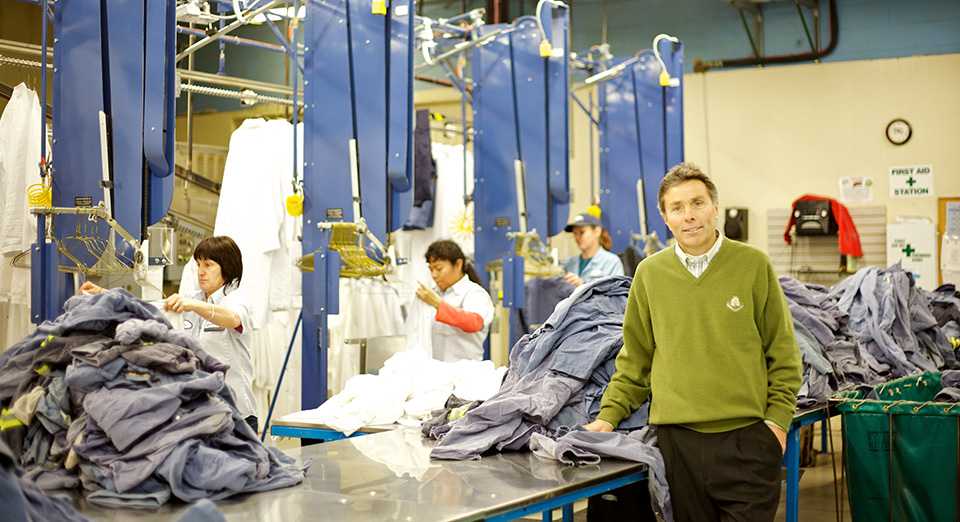
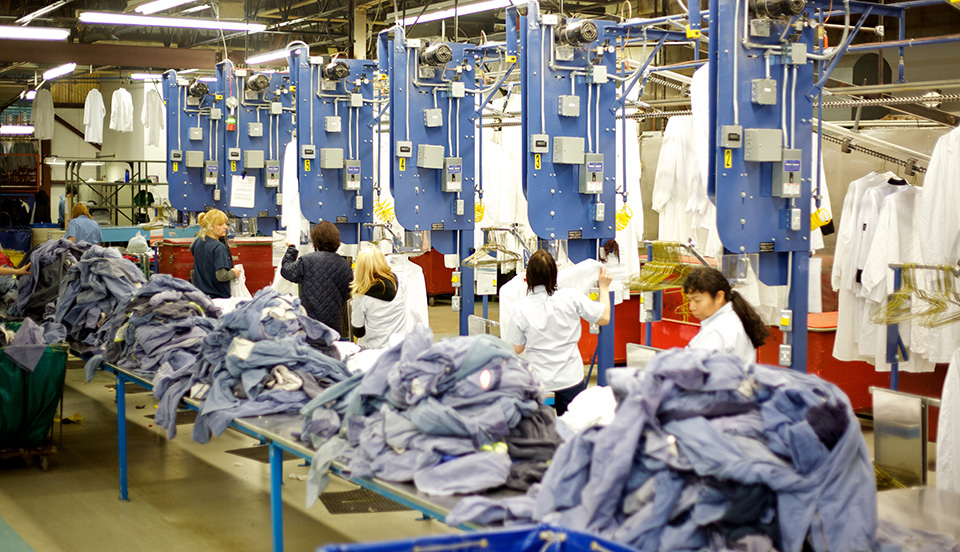
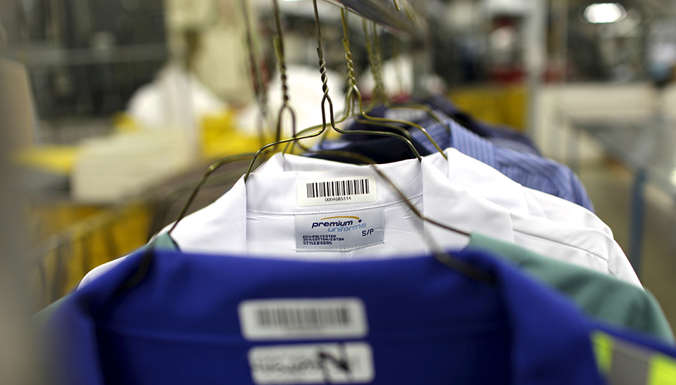

Your employees are your most important asset. Help them make the best impression possible with a full-service uniform program from Quintex. As a Quintex customer we will work with you to develop a custom program that fits both your employees and your budget. Our large inventory of premium service garments, plus our expanded catalogue featuring more than 100,000 items, ensures that we will be able to outfit you with exactly what you need.

Quintex’s complete “no-worries” service that removes all of the guesswork and effort from supplying cleaned and pressed uniforms to your employees 365 days a year. This service is available under both rental and outright purchase agreements.
Select uniforms, workwear and promotional wear as you need from our expanded catalogue. Purchase can be made by company, by department or even by employee, and online purchase options can be provided. Laundering is not included with this service.
Design a custom lease uniform program and tailor it to your specific needs and budget without the upfront cost.
Ask your Quintex Sales Representative for details on these programs, and which one is right for you and your team.
At Quintex we’re committed to providing you with a uniform program that works seamlessly for you day-in and day-out, 365 days a year. We’ll take time to learn about your business or operation so that we can adapt our processes to meet your specific needs. Our commitment to never force you into an “off-the-rack” solution is one of the reasons we’ve become Manitoba’s favourite partner for uniform solutions.

Here are a few more ways we take care of you when you partner with Quintex:
We’ll supply you with your own service representative who is responsible for ensuring you’re always 100% satisfied with our service. Your service representative will get to know your business and your needs, and meet with you regularly to make sure we are living up to our promises. They will also monitor the supplied uniforms on your employees to make sure that are always representing your brand correctly. If you ever have a question, a special request or would simply like to explore some additional ways we can help you, your Quintex Service Representative will always be just a call or an email away.
As a uniform supplier we know how older or used garments of substandard quality can cause problems on your end. That’s why we’re very picky about the brands that we offer to our customers and insist on sourcing our garments from only top suppliers and manufacturers.
With Quintex you’ll never be asked to purchase based solely on information in a catalogue. Instead, you and your employees will always have the opportunity to examine garment samples before you decide, allowing you to touch and feel the fabric as well as study detailing and make sure it’s right for you.
New government regulations now require many workers to wear high visibility garments that meet CSA compliance requirements. Quintex is an industry leader with respect to knowledge of these CSA standards and we help ensure your workers and operation are in compliance with our comprehensive selection of Z96-09 compliant garments available for both purchase or lease. Find out more here.
When you have tens of thousands of garments in your care, with each one being washed countless times a year, you understand the importance of processing those garments as gently and efficiently as possible. That’s why we’ve invested in some of the industry’s best washing, drying, pressing and sorting equipment available, resulting in superior service for our customers.
Ever wonder how we can keep track of thousands of employees’ uniforms every week? Probably not. The secret is in the scannable barcodes that we attach to every garment, as well as our specialized tracking software. Together, they allow us to keep track of every garment in our care including who it belongs to, the number of times it has been washed, if it has been repaired and when it is ready for replacement. Our industry specific software also allows us to maintain an accurate record of your entire account including your employee’s measurements, garment usage and repair patterns, so all you have to worry about is what you do.
All garments are inspected closely by Quintex staff at least three times while they are in our care for laundering. Garments showing significant damage or wear are immediately removed for repair or replacement at no extra charge. The extra care we take at this stage helps ensure that your employees are always dressed to standard and are making a great impression of your brand.
Whether your schedule is daily, weekly or longer, our route planning software and GPS tracking of our dedicated fleet is your assurance that your employees will always have freshly cleaned and pressed garments when they need the. We can even help you set up an on-site “contingency inventory” of uniforms to cover you in case of weather events or unexpected emergencies.
We know you care about the environment and we do too. That’s why we work hard to employ eco-friendly processes and products [green life services] whenever possible, including investing in some of the most efficient laundering and drying machines and equipment for our plant available. We even have a no-idle policy for our drivers.
At Quintex we’re always looking for new ways to provide added value for our uniform partners. Here are a few of the additional uniform services we offer:

Quintex maintains it own in-house embroidery service, allowing you to have logos, emblems, name patches and other markings applied to any uniforms or promotional items we supply. It is not necessary to be an existing Quintex customer to access this turnkey service, and a Quintex sales representative can visit you to walk you through your many options.
As a Quintex uniform partner you’ll always have access to our full catalogue of workwear and promotional wear, available to you at highly competitive prices. These items can be purchased with or without laundering service. Ask your Quintex sales representative for details.
Suitable for larger employers, Quintex can set up an online storefront under your company’s brand that will allow your employees to order approved uniforms and workwear directly from Quintex.
Getting started with a uniform program from Quintex is easy. First an experienced Quintex Sales Representative will meet with you to perform a thorough Needs Analysis for your business or organization. If you wish, We’ll even review your existing uniform contract with another provider, and show you what additional options or value Quintex might be able to provide. Our in-depth review includes:
Once the review is complete we’ll provide you with a formal proposal detailing a customized service plan for your business including projected garment usage, delivery commitments and pricing for all items and services. Most plans require no upfront costs or investment, and are open to adjustment should your needs change over the course of the contract. If hired for your uniform services, we’ll then individually measure everyone of your employees to ensure proper sizing, and provide any staff training that may be required regarding our service. Through it all, your Quintex Sales Representative will be with you every step of the way to ensure a seamless (no pun intended) transition to our service.
With more than 2,500 customers and 250,000 uniforms in circulation, Quintex is the largest supplier of uniforms in Manitoba.
…that we frisk and weigh all soiled garments before they are laundered to help find any items mistakenly left in or on them? More than once we’ve returned a valuable ring to a worried spouse.